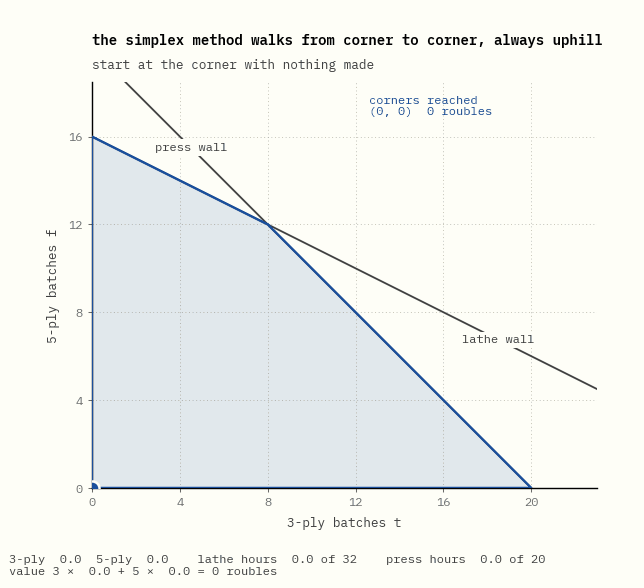
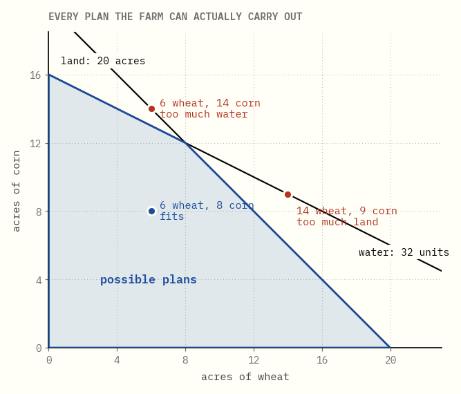
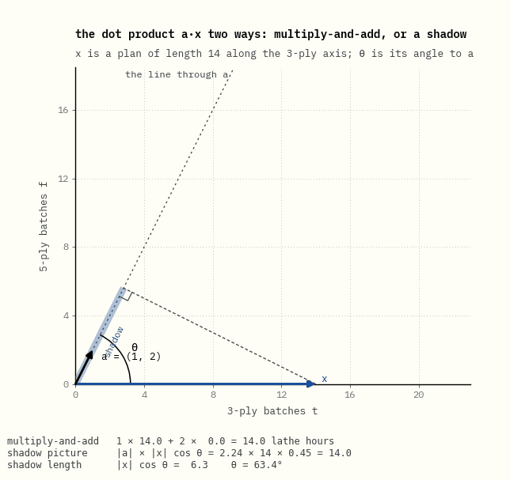
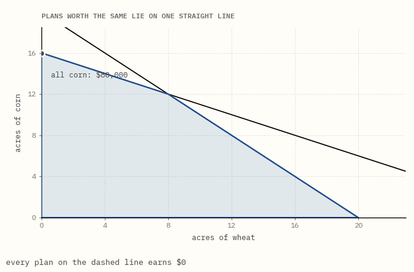
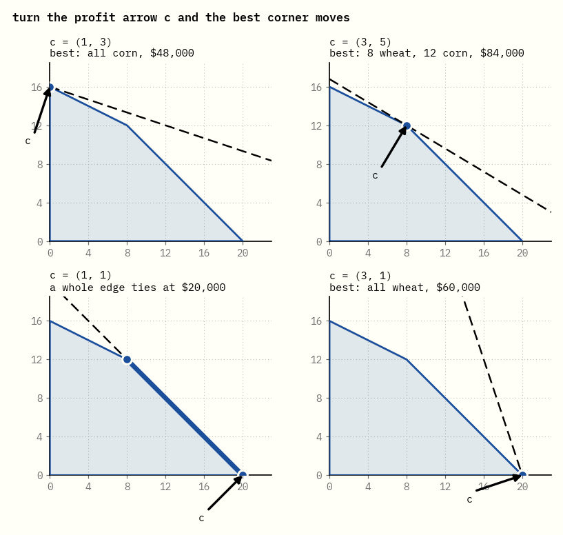

Corners, walls and prices
A farmer has 20 acres of land and 32 units of water, and has to decide how much wheat and how much corn to plant. That is a linear program. So, with thousands of rows instead of two, is an airline's crew schedule or a refinery's daily blend.
This guide follows the first eight chapters of Craig Tovey's Linear Optimization and Duality, using that one farm almost the whole way through. Every number on the page is computed in exact fractions by the code beside it, and a test fails if the prose and the code disagree.
0What this is

That walk is the simplex method, which George Dantzig devised in 1947. It starts at a corner of the shape, moves along an edge to a neighbouring corner that is worth more, and stops when no neighbour is better. Here it takes two steps: from nothing planted, to all corn, to 8 acres of wheat and 12 of corn.
Watch the readout under the picture. In step 1 the water used climbs to 32 and stops climbing: the dot has hit the water wall. In step 2 the water stays at 32 while the land climbs to 20: the dot slides along the water wall until it hits the land wall as well. Each step ends when one more resource runs out.
Getting there takes a few ideas, and each chapter adds one:
- Chapters 1 to 5 set the problem up: what the shape is, why the answer sits on a corner, how to turn a story into a problem, and the second problem hiding behind every linear program, about what the resources are worth.
- Chapters 6 to 11 are about the shape itself: walls, corners, and what goes wrong when too many walls meet at one point.
- Chapters 12 to 17 are the simplex method: the walk, the table that does its bookkeeping, how it avoids walking in circles, and how it finds somewhere to start.
- Chapters 18 to 20 come back to prices: why they are right, how far they can be trusted, and how the big theorems fit together.
Each idea comes as a picture first and a sentence second. Where the textbook needs symbols, they appear as a small table of numbers you can check by hand. The glossary at the end gives the textbook name for every plain word used here.
1A plan inside the walls
By the end of this page you will be able to look at one row of a linear program, such as 1 × w + 2 × c ≤ 32, and see an arrow, a wall at right angles to it, and which side of the wall is allowed.
The farm grows two crops. Each acre uses some land and some water, and earns a fixed amount:
| water | land | earns | |
|---|---|---|---|
| an acre of wheat | 1 unit | 1 acre | $3,000 |
| an acre of corn | 2 units | 1 acre | $5,000 |
| the farm has | 32 units | 20 acres |
A plan is just two numbers: acres of wheat and acres of corn. So every plan is a point on a sheet of paper, with wheat across and corn up.

Each resource draws one straight line. Below the water line are the plans that use at most 32 units of water; on the line itself the water runs out exactly. The same goes for land. Planting a negative number of acres is not allowed, so the two axes are walls as well. The shaded region is what is left: every plan the farm can actually carry out.
Take 6 acres of wheat and 14 of corn. That uses 20 acres, all the land there is, which is fine. It also needs 6 + 28 = 34 units of water, two more than the farm has. The point lies just past the water line, and that is the whole check. The rest of this page explains why the line is straight, why it sits where it does, and why the allowed side is the origin's side.
One row is a dot product
A plan of w acres of wheat and c acres of corn uses 1 × w + 2 × c units of water. Put the water each crop needs per acre into an arrow a = (1, 2), and the plan into an arrow x = (w, c). Multiplying matching entries and adding is the dot product, written a·x. Every row of a linear program is one dot product, and its arrow is the row of numbers in front of the variables.
The dot product has a second meaning, and it is the picture behind every wall. If θ is the angle between the two arrows, a·x = |a| |x| cos θ. The part |x| cos θ is the length of x's shadow on a: drop a line from the tip of x at right angles onto the line through a, and measure from the origin to where it lands.

Watch the two readouts under the picture.
- They agree in every frame. Multiply-and-add is the arithmetic, and length × length × cos θ is the same number seen as a picture.
- x never changes length, yet the water it needs runs from 14.0 up to 31.3 and back down to 28.0. Its direction alone decides that.
- The shadow is longest, all 14 of x, when x points straight along a. Then θ = 0 and cos θ = 1.
So a·x = |a| × (the shadow of x on a). Since |a| = √5 never changes, the water a plan uses is its shadow on a, times √5.
A wall is every plan with the same shadow
![The line through a = (1, 2) drawn from the origin. A solid line at right angles to it starts at the origin and slides outwards as the amount of water b grows from 0 to 40, leaving faint copies at 8, 16, 24, 32 and 40, evenly spaced along a. The side towards the origin is shaded and labelled a·x < b, the far side a·x > b. Three fixed plans report the water they use, 22, 32 and 40, and each is labelled more, on the line, or less as the line reaches and passes it. The line comes back to b = 32 and stays there, labelled the water wall.](chapters/01-inside-the-walls/levels.gif)
Watch the moving line and the three dots.
- The line never turns. Every line a·x = b is at right angles to a, whatever b is.
- A dot is on the line exactly when b equals the water that dot uses. Before the line reaches it the dot uses more than b; after the line passes it, less.
- The faint copies are evenly spaced: each extra 8 units of water moves the line 8 ÷ √5 ≈ 3.6 further along a.
Why at right angles? Two plans on the same line use the same water, so the move d from one to the other has a·d = 0. A dot product is zero only when cos θ = 0, so d is at right angles to a.
![The water wall and the arrow a = (1, 2), with a tick on the line through a at 32 ÷ √5 = 14.3. Step 1: a plan slides along the wall from all corn to 19 wheat and 6.5 corn; its shadow, the blue bar, stays exactly at the tick and the readout stays at 32 units. Step 2: the plan steps away from the origin, the bar grows past the tick and turns amber, and the plan is labelled too much water at 42 units. Step 3: it steps back inside, the bar shrinks below the tick, and the plan is labelled water to spare.](chapters/01-inside-the-walls/shadow.gif)
Watch the bar and the tick. While the plan stays on the wall the bar does not move, though the plan travels a long way. The bar moves only when the plan moves along a, and the water readout moves with it.
So the water wall a·x = 32 is every plan whose shadow on a is 32 ÷ √5 ≈ 14.3. It cuts the sheet into two halves: a·x < 32 on the origin's side and a·x > 32 on the far side. The arrow a points towards the side that uses more water.
Land is the same with the arrow (1, 1), and its wall sits where the shadow is 20 ÷ √2 ≈ 14.1. More crops change only the number of entries in the arrows. With three crops, a·x = 32 is a flat plane at right angles to a; with any number of crops it is called a hyperplane, and each side of it a half-space. The region of possible plans is where all the half-spaces overlap.
The walls are flat because of two assumptions. A second acre of corn uses exactly as much water as the first, and the water used by wheat and corn simply adds up. Problems with those two properties are called linear programs. A water company that charged less per unit after the first 20 would bend the water line, and the methods in this guide would no longer apply as they stand.
The one thing to remember. A row a·x ≤ b measures each plan's shadow on the arrow a; the plans with shadow exactly b ÷ |a| form a wall at right angles to a, and the allowed side is the side a points away from.
2The best plan sits on a corner
By the end of this page you will see why the best plan is always a corner, and you will have a proof that 8 wheat and 12 corn is best which checks no other corner.
Corn earns $5,000 an acre and wheat only $3,000. The obvious plan is to plant as much corn as possible. Corn needs 2 units of water an acre, so 32 units are gone after 16 acres. That plan earns $80,000 and leaves 4 acres of land empty.
It is not the best plan. Swap one acre of corn for two acres of wheat: the water used stays the same, the land used goes up by one, and the profit goes up by $1,000. Keep swapping until the land runs out, and the farm reaches 8 acres of wheat and 12 of corn, worth $84,000.
Profit is a dot product too
Profit is 3 × w + 5 × c, which is c·x for the profit arrow c = (3, 5). Everything chapter 1 showed for the water arrow holds for c. Plans with the same profit have the same shadow on c, so they lie on one line at right angles to c, and more profit means a longer shadow along c.

Watch the dark part of the region.
- At $80,000 all corn is on the line, but the dark strip beyond the line is still part of the region. Those plans earn more, so all corn is not best.
- The dark part shrinks as the line moves out, and it disappears at the last point the line touches. That point is the best plan.
- The last point is a corner. The line is straight and the region's edges are straight, so the line leaves the region at a single corner, or along a whole edge whose two ends are corners.
The region has only four corners:
| corner | wheat | corn | earns |
|---|---|---|---|
| nothing planted | 0 | 0 | $0 |
| all wheat | 20 | 0 | $60,000 |
| all corn | 0 | 16 | $80,000 |
| both walls at once | 8 | 12 | $84,000 |
So the question "which of infinitely many plans is best?" becomes "which of four corners is best?". With thousands of crops the number of corners is far too large to check one by one, and that is what the simplex method in chapter 12 is for.
A proof that checks no other corner
At 8 wheat and 12 corn the water and the land are both used up. Take any other plan x and the move d = x − (8, 12) that gets there. The move cannot use extra water, since there is none, so (1, 2)·d ≤ 0; for the same reason (1, 1)·d ≤ 0. The question is what that says about the profit.
![A close-up of the corner 8 wheat and 12 corn, where the water and land walls cross. Step 1 grows the arrow 2 × (1, 2) from the corner; step 2 adds 1 × (1, 1) from its tip; step 3 shows the profit arrow c = (3, 5) ending at exactly the same point. Step 4 swings a move d through every direction that stays in the region, from along the water wall to along the land wall, while the readout gives the extra water (1, 2)·d, the extra land (1, 1)·d, and the extra profit 2 × water + 1 × land, which never rises above zero.](chapters/02-best-is-a-corner/why_best.gif)
Steps 1 to 3 show that c = 2 × (1, 2) + 1 × (1, 1). So for any move d, c·d = 2 × ((1, 2)·d) + 1 × ((1, 1)·d). Watch the readout in step 4.
- The extra water and the extra land are never positive. Every move that stays in the region uses less of at least one and more of neither.
- The extra profit comes from those two numbers alone: twice the extra water plus the extra land.
- Along the water wall the water change is 0 and the profit change equals the land change. Along the land wall it is the other way round, with the water counted twice.
Two times something no bigger than zero, plus one times something no bigger than zero, cannot be positive, so no plan earns more than $84,000. This works because both multipliers, 2 and 1, are positive: in the picture, c points between the two walls' arrows. Those two numbers come back in chapter 4, where they turn out to be what a unit of water and an acre of land are worth to this farm.
Turn the arrow and the corner moves

Read the panels left to right, top to bottom: c turns from steep to flat, and the best corner moves the same way, from all corn to all wheat. In between, c = (1, 1) is the land wall's own arrow, so the line of equal profit lies flat against the land wall and the whole edge ties. The best plans then fill an edge, but its two ends are still corners, so checking corners still finds the best value.
The one thing to remember. The best plan is the point of the region that reaches furthest along the profit arrow c, and that point is always a corner.
Glossary
| here | in Tovey and other textbooks |
|---|---|
| plan | feasible solution |
| the region of possible plans | feasible region |
| wall | constraint, or the hyperplane where it holds with equality |
| line of equal profit | isoprofit line, level set of the objective |
| corner | extreme point, vertex |
| arrow a of a resource | the constraint's row, its normal vector |
| shadow on a | scalar projection, a·x ÷ |a| |
| the two halves either side of a wall | half-spaces |
| profit arrow c | objective vector, gradient of the objective |
Further reading
Craig A. Tovey, Linear Optimization and Duality: A Modern Exposition, CRC Press, 2021. Chapters 1 and 2 cover what chapters 1 and 2 here do, with more examples.
Running the code
From the repository root, make bootstrap once. Then, in this folder,
make check re-renders every figure, rebuilds the page and runs the tests.